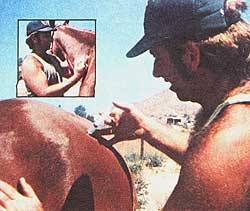
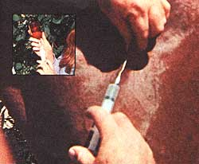

For many folks, buying that first horse (or cow, or goat) is the fulfillment of a lifelong dream. And for some, the veterinarian bills that follow can soon turn into a nightmare.
"There's an easy way to cut some of those medical expenses quite drastically, however," say Ron and Linda Martin of Imbler, Oregon. "Namely, perform your own injections!" The Martins speak from experience: They recently gave their horse-Long John Silver-both antibiotic and tetanus shots after the animal suffered a deep puncture wound on some hidden barbed wire. Here's how they did it:
First, the couple asked their vet-who had treated Long John before-what drugs to buy, what dosages to give, the gauge of needle to use, etc.
Next, Ron and Linda searched the Yellow Pages for the address of the nearest veterinary supply house, and drove out to the establishment. There, they bought the following equipment:
[1] NEEDLES. "Initially, we made the mistake of buying 314" needles," says Linda. "Well, they weren't nearly long enough to put an injection as deeply into a horse's muscle tissue as a shot should go, and-as a result-Long John developed several large abcesses where we gave the antibiotics. We thought for sure we'd murdered our beloved horse! (The lumps, however, disappeared within 10 days.) Now we know enough to use 1-1/2", 18-gauge needles for our horses, and save the 3/4" ones for our goats' shots."
[2] SYRINGES. "The plastic, disposable kind served us well in the beginning," remarks Linda, "but we now prefer a permanent nylon syringe that we can sterilize and reuse many times." (Note: Syringes come in different sizes and must-therefore-be chosen with a specific dosage of medication in mind.)
[3] DISINFECTANT. The Martins chose to store their reusable injection equipment in quaternary ammonium disinfectant (sold under such trade names as Cetavlon, Desogen, and Bradosol ), rather than alcohol, which can adversely affect certain medicines and syringes.
[4] MEDICATION. Here, Ron and Linda-on the advice of their vet-bought an antibiotic preparation called Combiotic, to stop the infection that was developing in Long John's wound. They also bought tetanus antitoxin, to protect the animal against tetanus. "It's important to note," says Linda, "that there are two kinds of tetanus medication: a long-acting toxoid, intended to be given once yearly . . . and a short-term antitoxin for use when injuries occur between yearly shots. We bought the second kind for Long John."
After purchasing their injection equipment, Ron and Linda read everything they could find on injuries, injections, medicines, anatomy, etc. Says Linda: "This 'boning up' taught us-among other things-that different drugs must be injected in different ways. We learned, for instance, that tetanus antitoxin must be given subcutaneously -or just under the skin-while most antibiotics are given intramuscularly, or deep in the muscle.
"We also learned that it's extremely important-before giving a shot-to hold the syringe straight up, tap it with your finger to bring air bubbles up to the needle, and press the plunger to expel those bubbles. Otherwise, if that air were to be injected into the animal's bloodstream, the beast would die."
Giving the subcutaneous tetanus shot was a cinch. Linda summarizes the procedure this way: "All you do is use your thumb and first finger to pick up some skin in the middle of the horse's neck . . . then you pull the fold away from the neck, slide the needle under the pinched skin (you can feel it pierce the hide), inject the serum, and withdraw the needle. Unbelievable as it may seem, the horse probably won't even flinch."
The Combiotic shots (one per day for five days) were no harder than the tetanus injection . . . once Ron and Linda had learned where to give them. "We tried twice to stick Long John in the rump," says Linda, "and both times, we nearly got kicked halfway across the corral!" After thinking over their earlier success with the subcutaneous tetanus shot, the couple finally decided to administer the antibiotics into their horse's neck muscles.
"A very experienced friend of ours had offered some advice to us on how to give I.M.-intramuscular-shots, and it turned out to be right on the mark. He told us: 'Give I.M. injections in the hollow of the neck or the rump. If in the neck, insert the needle deep and at a slight downward angle, following the flow of the muscle. If in the rump, just get in and out as quickly as possible with a downward motion from above!'"
(Note: In the case of an intramuscular injection, it's always a good idea-before pushing the syringe's plunger down-to check to see that a vein hasn't been hit by mistake. To do this, pull gently on the plunger. If blood appears in the syringe's chamber, a vein HAS been hit and a new injection site should be chosen.)
Certainly, do-it-yourself injections are not entirely free of risks. If strict sanitation is not practiced, for example, the animal may develop a painful infection at the site of the injection. Also, some beasts-though not many-are "allergic" to various drugs and react adversely to them.
"Still," say Ron and Linda Martin, "anyone who can hold a pencil should be able to give shots to their livestock-safely and economically-if he or she will take the time to seek counsel from a vet, talk to knowledgeable friends, consult books, locate-and buy goods from-a veterinary supply house, practice painstakingly good sanitation, and keep careful records of symptoms, dates, drug names, dosages, etc. Do all this, and your beasties will live healthfully ever after!"
|
 Intramuscular shots can be given in the rump, but?unless you know the animal won't buck?the neck (inset) is probably a better choice. |
 To give a subcutaneous shot, pinch some skin between your fingers and shoot directly into the fold. Inset shows proper way to fill a syringe. |
|